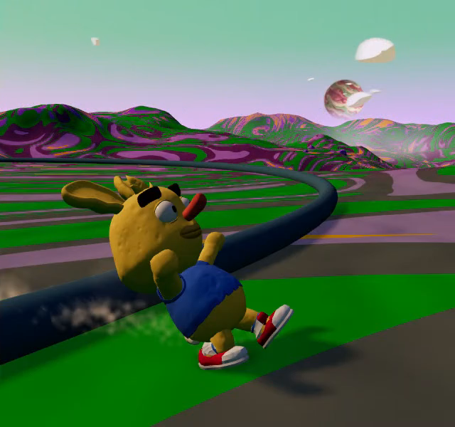
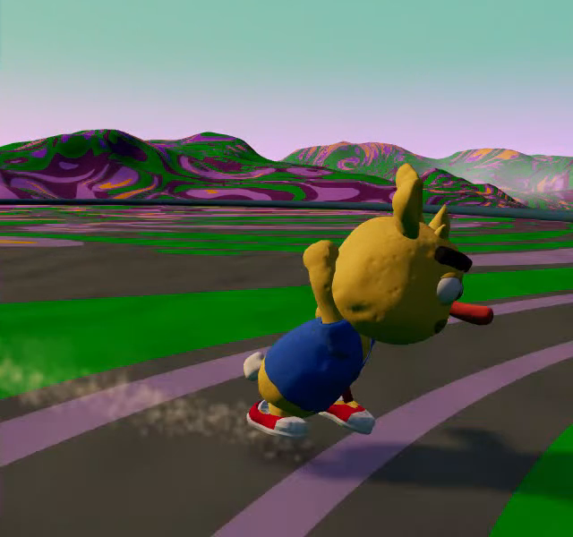

Bodenkontakt R1 · ein System für alle Fortbewegungen
Konzept vor dem Bau (Georg 17.11., q754 TUNE). Laufen, Auto, Diesel, Hover und Jetpack bekommen denselben Motor; jede Fortbewegung sagt nur, wo sie den Boden berührt und wie breit.
A · Das Modell: was beim Kontakt mit dem Boden passiert
Je Kontaktpunkt und Bild kommt herein OrtBreite der FlächeDruck (wie hart)Rutschen: Richtung und StärkeTempoBoden: Farbe und Material an genau dieser Stelle
Rutschen ist der Kern: Wer antreibt, schiebt den Boden nach hinten. Wer bremst, schiebt ihn nach vorn. Wer driftet, schiebt ihn zur Außenseite. Wer landet, drückt ihn rundum weg.
→
Daraus entstehen fünf Schichten, immer gleich gebaut 1 Staubfahne (fein, weht aus)2 Körner und Steinchen (sparsam, fliegen gegen die Schubrichtung, bleiben liegen)3 Spuren (Reifen, Fußabdruck, Furche)4 Speedlines an festen Ankern5 Ton aus demselben Auslöser
Farbe kommt immer aus dem Boden darunter (Farbband, Asphalt, Gras), nie aus einer festen Staubfarbe. Größe und Menge wachsen mit der Fortbewegung: Fuß klein, Racer mittel, Diesel groß.
Zu Fuß 2 Punkte: Ballen beim Laufen, Ferse beim Bremsen
1 · Aufsetzen beim schnellen Lauf · der Ballen drückt den Boden nach hinten
Fuß schwingt vor
Ballen setzt auf
Abdruck: wenige Körner nach hinten-oben
Körner fliegen flach, feiner Staub bleibt
Körner liegen, Fahne weht aus
Im Takt der Schritte, je schneller desto weiter. Sprint: kaum. Turbo: deutlich. Roadrunner: dichter Schweif. Nach vorn fast nichts.

2 · Bremsen mit der Ferse · die Ferse pflügt wie eine Schaufel
Ferse stemmt sich ein
Wall baut sich vor der Ferse auf
Steinchen nach vorn und seitlich, Furche dahinter
Abfangen: Staub steigt vorn auf
Wall und Furche bleiben, Staub setzt sich
Dasselbe wie Handbremse beim Auto oder Vollbremsung beim Diesel, nur kleiner. Nach hinten fliegt nichts.

3 · Wirbelbeine im Roadrunner · die Beine bleiben echte Beine, die Bahn wird sichtbar
Turbo: echtes Bein, keine Hilfen
Mehrfach-Bein: zwei blasse Nachbilder
Wirbelkreis, am dunkelsten wo der Fuß ist
Speedlines an den Füßen, weich nach hinten
Langsamer: Kreis und Linien laufen aus, scharfes Bein
Kein Drehen der Beine im Kreis. Speedlines nur an den zwei Fußankern, bauen sich hinter FB auf, eine durchgehende Linie ohne Kante, Stauchung oder Überlagerung (wie Tiny Skies). Sichtbarkeit und Länge wachsen mit der Stufe.
C · Vorbilder und Reihenfolge
Wie Trickfilm und Spiele es machen Road Runner (Chuck Jones): Wirbelbeine als Kreis mit sichtbarem Fuß · Looney-Tunes-„Multiples“ und Smear-Bilder: Nachbilder statt Unschärfe · Rennspiele: Felgen-Scheibe mit Bewegungsstreifen, gewichtet nach Drehrichtung · Tiny Skies: Speedlines an Ankern, weich aufgebaut
Bau nach deinem OK 1 Bodenkontakt-Kern mit Bodenfarbe, zuerst Laufen und der Dieselpunk-Wagen darauf (Fahne gleich gebaut, nur anders skaliert) · 2 Aufsetzen und Fersenbremse · 3 danach Racer, Hover, Jetpack · 4 eigene Runde: Wirbelbeine mit Speedlines (Kritiker vor dir)